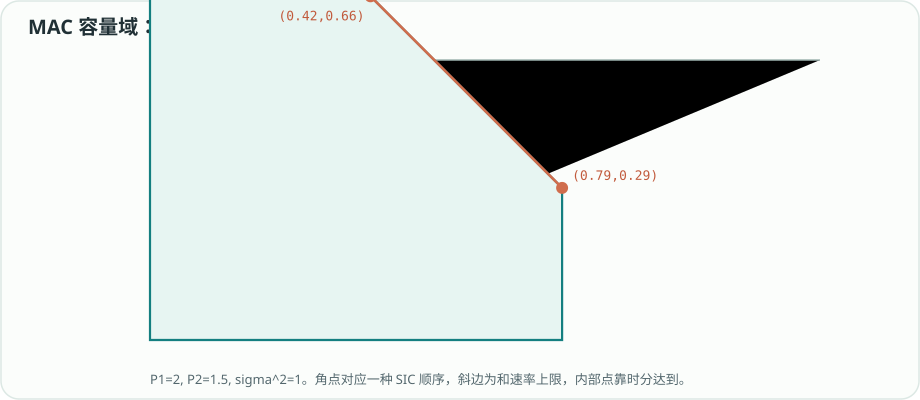
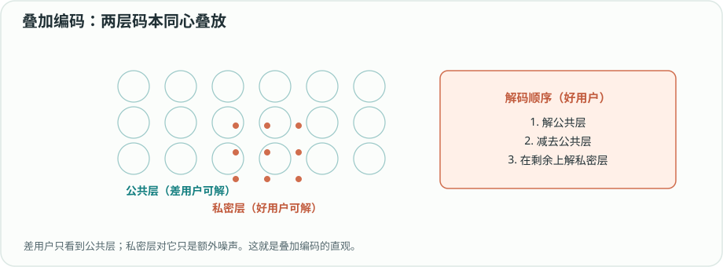
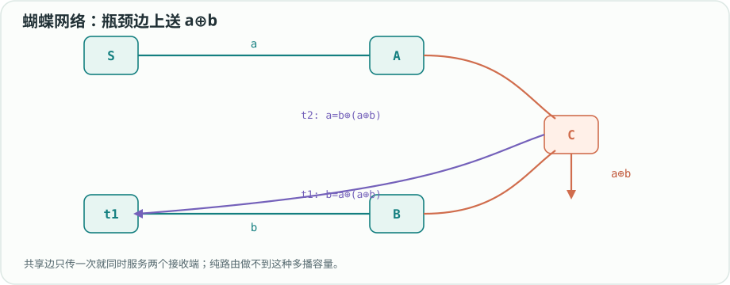

当通信从“一对一”变成“多对多”
前几章的信道模型都是单发单收：一个发送者、一个接收者、一条容量 C。但真实系统几乎都是多用户的——基站与几十部手机、Wi-Fi 里邻居互相干扰、广播电台一对多。一旦共享介质，容量就从一个数变成一个区域，而且很多区域的完整形状至今是未解决问题。
本章用四个模型搭起网络信息论的骨架：多址接入（多对一）、广播（一对多）、中继与干扰（拓扑更复杂），以及不靠信道容量而靠“混合数据包”的网络编码。
多址接入信道：五边形容量域
多址接入信道（MAC）多个发送者共享一个接收者，典型场景是 5G 上行。两用户高斯 MAC：
三条不等式围成一个五边形。关键含义：两个用户不能同时以各自单独信道时的全速率通信，必须互相“让路”。但总速率可以超过任一单独用户，因为两个信号叠加后总功率更大。
边界上的两个角点对应连续干扰消除（SIC）：接收端先解调一个用户（把另一个当噪声），减掉后再生解另一个。解调顺序不同就得到两个不同角点；五边形内任意点可由这两个角点时分得到。

固定 P₁=2、P₂=1.5、σ²=1；时分点位于两个 SIC 角点的连线上，与容量域边界一致。
广播信道：叠加编码
广播信道（BC）一个发送者、多个接收者（如 5G 下行）。最经典的是退化广播信道：接收者之间成马尔可夫链
核心编码技术是叠加编码（superposition coding）：把公共消息放在一个“功率层”，把只对好用户有意义的私密消息放在另一个层。差用户只能解出公共层；好用户先解公共层、减去后解私密层——与 MAC 的 SIC 思路对偶。

中继与干扰：开放问题的重灾区
中继信道（源→中继→目的）两种基本策略：解码转发（DF）中继先完全解码再重编转发，简单但可能错误传播；压缩转发（CF）中继把收到的信号有损压缩后转发，让目的端“拼图”，在弱中继链路上往往更好。其容量域目前只有 Cover–El Gamal（1979）给出的上下界，二者之间有间隙。
干扰信道：两对收发共用频谱、互相干扰，是网络信息论里最著名的开放问题。已知最好的可达策略是 Han–Kobayashi（部分解码干扰），但一般最优性未证；Cadambe–Jafar（2008）的干扰对齐展示了自由度可随用户数线性增长，但依赖（渐近）无限维信号空间。
| 模型 | 发送/接收 | 容量结果 | 典型应用 |
|---|---|---|---|
| 多址接入 MAC | 多对一 | 完全已知（五边形） | 5G 上行、Wi-Fi 多用户 |
| 广播 BC | 一对多 | 退化已知，一般开放 | 5G 下行、数字电视 |
| 中继 | 1 源 + 中继 | 上下界，有间隙 | 卫星、IoT 中继 |
| 干扰 | 多对多 | Han–Kobayashi 界，一般开放 | D2D、未授权频段 |
网络编码：从搬运到计算
传统路由把数据包当“原子”转发（存储–转发），中间节点不改变内容。网络编码让中间节点对数据包做代数运算（如异或）再转发。最经典的例子是蝴蝶网络：源 S 同时要把两份数据 a、b 送到两个端节点 t₁、t₂，而两条路径在中间共享一条瓶颈边。
传统路由下瓶颈边一次只能传一个包，需要两轮才能服务两个端。网络编码把瓶颈边上传 c=a⊕b：t₁ 已从另一条边拿到 a，算出 b=a⊕c；t₂ 同理得 a。一轮就同时服务两个接收端。

一般结论（Ahlswede 等人的多播定理）：允许中间节点编码时，单源多播可达最大流最小割容量；而纯存储–转发路由在多播下往往达不到这个上限。线性网络编码只需在 GF(2ᵐ) 上生成随机线性组合，接收端收够独立方程即可解出原始数据。
把容量域与时分写成可测试代码
本仓库的 Python 样例给出两用户高斯 MAC 的三个边界量，并用固定点断言。
from examples.foundations import mac_capacity_corners
R1, R2, Rsum = mac_capacity_corners(2.0, 1.5, 1.0)
assert round(R1, 4) == 0.7925 # ½log₂(1+2)
assert round(R2, 4) == 0.6610 # ½log₂(1+1.5)
assert round(Rsum, 4) == 1.0850 # ½log₂(1+3.5)
cornerA = (R1, round(Rsum - R1, 4)) # 先解用户 1
cornerB = (round(Rsum - R2, 4), R2) # 先解用户 2
assert cornerA[1] < cornerB[1] and cornerA[0] > cornerB[0]多用户信道的难点不在单条公式，而在于“区域形状”与边界可达性；网络编码则把优化对象从信道容量换成了节点间的代数组合。
来源与延伸阅读
- T. Cover (1972), Broadcast Channels, IEEE Trans. Inf. Theory 18(1)：退化广播信道容量与叠加编码。
- R. Ahlswede, N. Cai, S.-Y. Li, R. Yeung (2000), Network Information Flow, IEEE Trans. Inf. Theory 46(4)：网络编码与多播可达性。
- T. Han & K. Kobayashi (1981), A New Achievable Rate Region for the Interference Channel, IEEE Trans. Inf. Theory 27(1)：干扰信道的可达域。
- MIT 6.441 (2016) Multiple Access and Broadcast Channels：多用户信道容量域的课程推导。
- Cover & Thomas, Elements of Information Theory：网络信息论背景。